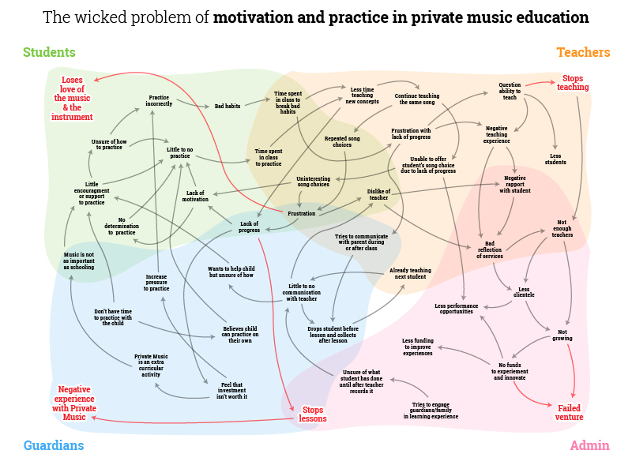

Introduction
This website is a repository for a design solution codenamed "e-semble". It is an in-depth design and plan that details at least the first 2 school terms of my approach to addressing my wicked problem.
Context
Johnson Music School is a small, privately owned local music school located in Sydney's western suburbs. It is managed by my husband and me, and we employ six instructors who cater to over 100 students of varying ages and skill levels. The student body predominantly comes from lower-to-middle-class backgrounds and pursues a range of educational objectives. Some students attend for leisure and enjoyment, while others work towards graded exams with the Australian Music Examinations Board, and a handful are dedicated to preparing for the Higher School Certificate Music examinations.
In my role as the administrator, I have cultivated relationships with the majority of students and their guardians. This approach fosters a supportive and open communication environment, which, in turn, promotes better understanding and cooperation when addressing any issues or concerns that may arise.
Wicked Problem
The wicked problem revolves around nurturing students' motivation for consistent practice and musical growth in private music education. It's a complex issue influenced by factors such as student personalities and teaching methods, leading to a lack of a one-size-fits-all solution. The problem persists despite ongoing efforts to address it, requiring innovative strategies to change student behaviour and cultivate habits. This challenge involves multiple stakeholders, including students, teachers, and guardians, making it a collaborative effort in a diverse student population. These inherent traits (Jordan et al., 2014; Zivkovic, 2015) collectively categorise our challenge as a wicked problem.
{kind=link}
Target Audience
The target audience for the proposed design solution includes students between the ages of 5 and 18 currently enrolled in Johnson Music School as well as their guardians. This solution is specifically designed for students who are experiencing motivational challenges due to their skills and repertoire not progressing and growing as easily as initially anticipated. Over time, they have found achieving their aspirations require sustained time and practice, which can lead to a decrease in their interest and motivation, particularly as they struggle to advance beyond playing easy or unfamiliar songs that form part of their syllabus. The design solution is open to any student within the specified age criteria, but its success does hinge on the participation of those who need to overcome motivational hurdles and rekindle their enthusiasm for music.